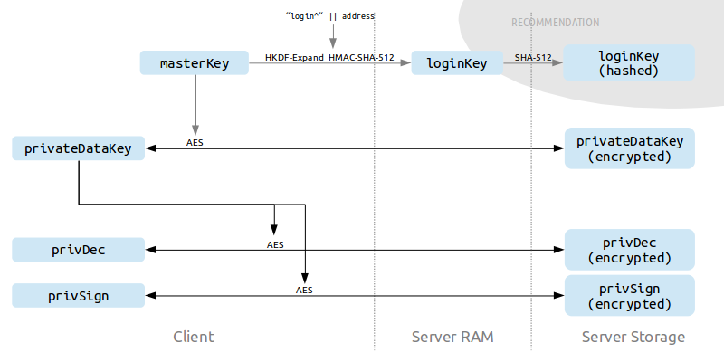

[TOC]

Note: In the following, "owner" denotes the user for which the keys are generated/stored.

## masterKey

A random bit string that acts as the secret input into the derivation of `loginKey` and is used for the encryption of `privateDataKey`.
When serialized as text (e.g. as a paper backup), a special format as described in [Text format for masterKey](crypto_keybackup.html) should be used.

Creation
:	String of 256 random bits (32 bytes). It is vital that the random number generator is good enough to be used for cryptography ([Wikipedia: Cryptographically secure pseudorandom number generator](http://en.wikipedia.org/wiki/Cryptographically_secure_pseudorandom_number_generator)).

API Access Control
:	Doesn't apply (never leaves the client).

Server-side Protection
:	Doesn't apply (never leaves the client).


## loginKey

Used by clients to authenticate to the server.

Creation
:	Derived from masterKey, using HKDF ([RFC 5869](http://tools.ietf.org/html/rfc5869)):
	`loginKey = HKDF-Expand(PRK=masterKey, info="login^"+kulloAddress, L=512/8) using HMAC-SHA-512`

API Access Control
:	Cannot be read. It can, however, be overwritten by its owner.

Server-side Protection
:	The server stores an unsalted SHA-512 hash of `loginKey` to prevent an attacker from logging in if he gets read-only access to the Kullo server database.


## privateDataKey

Used to encrypt information that is stored on the server but should only be accessible by the owner.

Creation
:	String of 256 random bits (32 bytes). It is vital that the random number generator is good enough to be used for cryptography ([Wikipedia: Cryptographically secure pseudorandom number generator](http://en.wikipedia.org/wiki/Cryptographically_secure_pseudorandom_number_generator)).

API Access Control
:	Can be read and written by its owner (in encrypted form, see below).

Server-side Protection
:	Encrypted on the client with `masterKey` (AES-256, mode GCM, with random IV), thus not accessible for the server.


## Public/Private Key Pairs (pubEnc/privDec, privSign/pubVer)

Each user has two independent asymmetric key pairs:

* pubEnc/privDec are used to encrypt and decrypt messages sent to the owner.
* privSign/pubVer are used to sign messages by the owner and to verify these signatures.

Creation
:	RSA key generation (4096 bits) on the client.

API Access Control
:	* pubEnc, pubVer: public read-only access; owner has read/write access
	* privDec, privSign: owner only (read, write)

Server-side Protection
:	* pubEnc, pubVer: signed with `privSign`
	* privDec, privSig: encrypted with `privateDataKey` (AES-256, mode GCM, with random IV), thus not accessible for the server.

